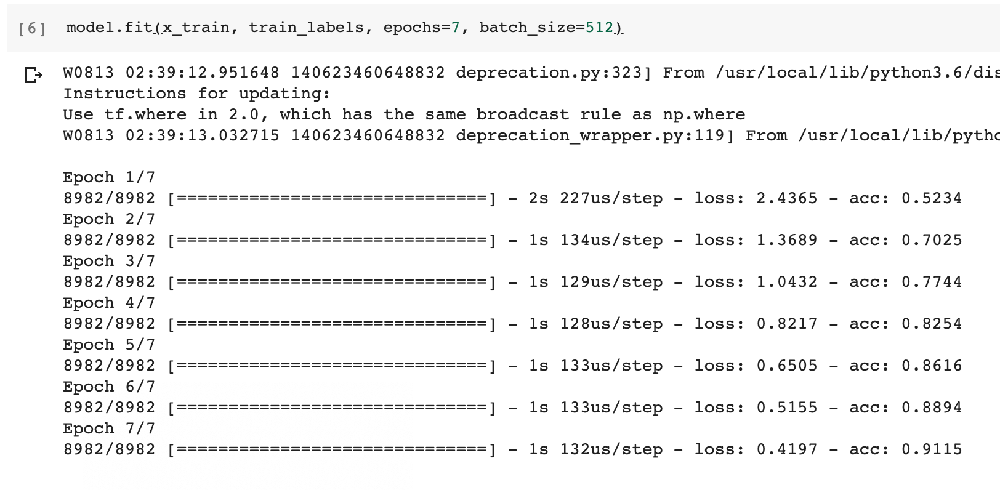

Mogaco
Mogaco(모각코) : 모여서 각자 코딩
OverFitting..
checking loss and acc
아래 사진의 Validation loss and accuracy를 보면 약 3~4번째 epoch부터 그래프가 역전되는 것을 볼 수 있다.
따라서 Training set에 과대적합 되는 것을 방지하기 위해, epoch를 4로 줄여볼 것이다.
epoch를 4로 줄인 채로 학습한 모습이다.
그래프와 Validation accuracy를 보면 이전에 비해 상당히 향상된 것을 볼 수 있다.
predict 메소드를 이용하여 데이터에 관해 예측해볼 수 있다.
1에 가까울 수록 긍정인 리뷰이고, 0에 가까울 수록 부정이다.
multi-class classification
로이터 데이터셋(뉴스 기사 분류)
뉴스 기사 분류는 전의 긍/부정 분류와 다르게, 여러 레이블로 분류를 해야하므로 사용해야할 모델이 다르다.
아직 완벽하게 데이터 전처리를 하거나 층 설계를 하지는 못하므로, 전의 예제를 토대로 바꿔가며 학습을 진행해볼 것이다.
model의 Dense층 변경
binary classification을 할 때에는 activation function으로 0~1까지의 확률을 나타내는 sigmoid함수를 쓰는 것이 적절했지만,
multi-class classification에서는 다중 분류를 위한 activation function인 softmax함수를 이용한 출력층으로 변경하여 사용한다.
우선 로이터 데이터셋을 로드한다
그리고, label의 범위(분류해야할 종류의 수)를 확인해보면 아래처럼 0~45 즉 46개로 분류해야 함을 알 수 있다.
(벡터화는 binary classification에서 사용한 방법과 동일하게 했음. 벡터화에 관해 제대로 이해하지 못해서, 추후에 다시 알아볼 것.)
46개로 분류해야 하므로 ReLu Dense층을 거쳐서 46개의 출력을 가지는 softmax Dense층으로 이어지도록 네트워크를 설계했다.
loss function을 다중 분류 문제이므로 categorical_crossentropy로 바꿔주고 컴파일한다.
epochs=7로 훈련시킨다.

test set으로 모델을 평가해본 결과 0.79정도의 정확도를 보였다.
느낀점
개념을 깊게 들어가면 쉽게 질릴 것 같아서 여러 예제를 통해 경험을 쌓는 중인데,
모델 설계는 여러 번의 경험으로 익힐 수 있을 것 같지만, 데이터 전처리에 관해서는 따로 공부를 해야할 것 같다는 생각이 들었다.
다음 번 모임 때에는 데이터 전처리에 관한 공부를 해보는 것도 좋을 것 같다.